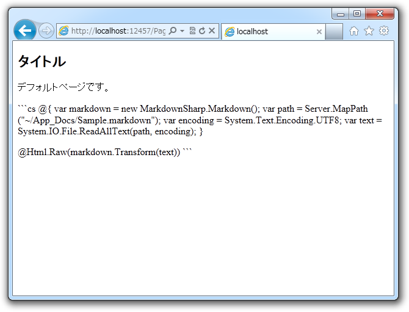
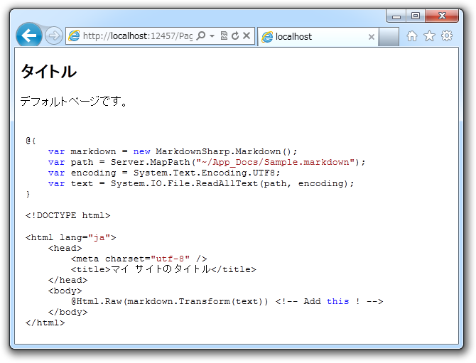

WebMatrix で Markdown を少しだけ拡張してみる
公開日：
前回（WebMatrix で Markdown を使おう！ - だるろぐ）は、「WebMatrix 2」で Markdown を使ってみました。ついでに静的クラスを用意して、コードも少しキレイにしてみました。最終的にはこんな感じです。
# Markdown.csusing System; using System.IO; using System.Text; using System.Web;
/// <summary> /// Summary description for ClassName /// </summary> public static class Markdown { private static readonly MarkdownSharp.Markdown md = new MarkdownSharp.Markdown(); private static readonly Encoding encoding = Encoding.UTF8;
public static HtmlString Parse(string input) { return new HtmlString(md.Transform(input)); }
public static HtmlString LoadFromFile(string path) { return Parse(File.ReadAllText(path, encoding)); } }
で、 Web ページ側ではこんな感じに使います。
# Page.cshtml
<!DOCTYPE html>
@{
var path = Server.MapPath(
string.Format("{0}/{1}.markdown",
"~/App_Docs/",
UrlData.Count == 0
? "Default"
: string.Join("/", UrlData)
)
);
}
<html lang="en">
<head>
<meta charset="utf-8" />
<title></title>
</head>
<body>
@Markdown.LoadFromFile(path)
</body>
</html>
ところで、前回は脚注にこんなことを書いておきました。
（Markdown の）弱点は若干機能不足なこと。これを補う派生版が幾つかあります
その代表例が Redirecting... （GFM）です。たとえば、こんな書式でプログラミング言語を指定してシンタックスハイライトが行えます。
```ruby
require 'redcarpet'
markdown = Redcarpet.new("Hello World!")
puts markdown.to_html
```これはいいですね！ さっそく取り入れてみましょう。
準備
まずはシンタックスハイライト機能をどうやって実現するか…… Google Code Prettify（http://google-code-prettify.googlecode.com/svn/trunk/README.html）ならば NuGet で取得できるのですけど、今回は Highlight.js （highlight.js）を使ってみることにしました。なぜかというと、こっちのほうが言語サポートが幅広いみたいだからデス。ダウンロードして、以下のように配置しました。
~/ /App_Code Highlight.cshtml <-- あとで説明します！ /Highlight Lisence Files /Content Highlight / Theme Skins /Scripts /Highlight hilight.pack.js
こうした状態で、
<!DOCTYPE html><html lang="en"> <head> <meta charset="utf-8" /> <title></title>
<link rel="stylesheet" href="~/Content/Highlight/default.css"> <script src="~/Scripts/Highlight/highlight.pack.js"></script> <script>hljs.initHighlightingOnLoad();</script> </head> <body> <pre><code class="language"> // Any Code… </pre></code> </body> </html>
などと記述すれば、 pre > code 内のコードが色分け表示されます。……しっかし、 Highlight.js は NuGet ないのか……めんどくせえな。久しぶりに作るかな。
コーディング
お次は Markdown.cs を拡張して、 ```～``` 記法へ対応させます。適当に正規表現で解決してみました。
： ： using System.Text.RegularExpressions;public static class Markdown { ： ： public static bool HighlightEnabled { get; set; }
static Markdown() { HighlightEnabled = true; }
public static string Highlight(string input) { const string R = @"
(?<type>\w+)\r(?<code>.+)"; const string F = @"<pre><code class=""{0}"">{1}</code></pre>";Regex r = new Regex(R, RegexOptions.Singleline);
return r.Replace( input, (m) => string.Format( F, m.Groups["type"], HttpUtility.HtmlEncode(m.Groups["code"]) ) ); } }
完成*1！ m.Groups[“code”] を HTML エンコードする必要があったのでラムダ式になりましたけれど、そうでなければ @"<pre><code class="“${type}"">${code}</code></pre>” で置換できるんですね。知らなかったわー。ちなみに、正規表現のテストはオンラインツールが便利です（The .NET Regex Tester | Regex Hero）。
できあがりはこんな感じ。

HighlightEnabled = false;

HighlightEnabled = true;
ステップアップ
最後に、少し細かいところをブラッシュアップしてみましょう。
<link rel="stylesheet" href="~/Content/Highlight/default.css"> <script src="~/Scripts/Highlight/highlight.pack.js"></script> <script>hljs.initHighlightingOnLoad();</script>
Highlight.js を使う際のおまじない、毎回書くの面倒ですね？ なので、ヘルパーとしてまとめてみました。 ~/App_Code/Highlight.cshtml に以下のように記述します。
@helper Include(string theme = "default"){ <link rel="stylesheet" href="~/Content/Highlight/@(theme).css"> <script src="~/Scripts/Highlight/highlight.pack.js"></script> <script>hljs.initHighlightingOnLoad();</script> }
これで Web ページを使うときでも、 @Higjlight.Include() を呼び出すだけでOK！
<!DOCTYPE html><html lang="en"> <head> <meta charset="utf-8" /> <title></title>
@Higjlight.Include("vs") <– おまじないに変換される </head>
引数を与えることでテーマを選択できるのもいい感じでしょう？ そうでもないデスか。まぁ、「鬼に金棒」、「怠け者にヘルパー」ってもんですよ。
*1:なんで改行が \n でマッチせずに \r ではマッチするんだ……くっそくっそ